El primer álbum de MF DOOM, a través de skits narra el nacimiento de un villano. Acorde, muchas de las canciones contienen pequeños fragmentos de canciones, sonidos o instrumentos de series y películas de superhéroes antiguas además de sampleo de jazz. Es un álbum algo extraño y definitivamente poco convencional pero que aún así consigue tener un sonido decente y todas las partes encajan entre ellas, aunque se me ha hecho algo pesado de escuchar después de un rato. Mis canciones favoritas han sido Doomsday, Red and Gold y Tick, Tick... siendo esta última la más inusual del álbum.
Imágen |
Álbum |
Artista |
Duración |
Fecha de salida (Y/M/D) |
Nota (sobre 10) |
Fecha de review (Y/M/D) |
|---|---|---|---|---|---|---|
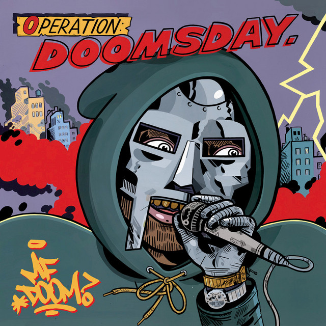 |
MF DOOM |
58 min |
1999/10/19 |
4.5 |
2023/02/13 |
|
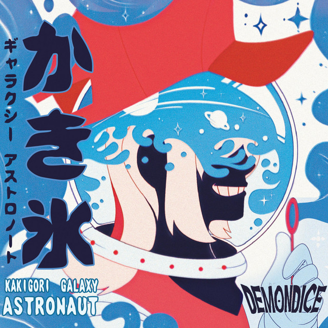 |
DEMONDICE |
23 min |
2019/03/02 |
9 |
2023/01/18 |
|
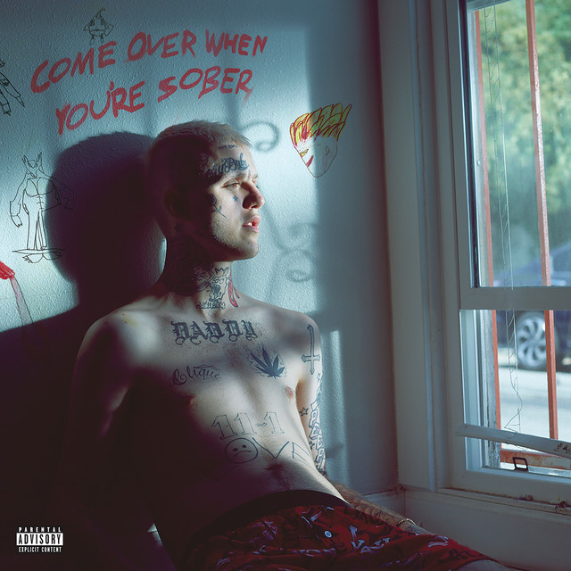 |
Lil Peep |
45 min |
2018/09/09 |
4.5 |
2023/01/08 |
|
Lil Peep |
23 min |
2017/08/15 |
5.5 |
2023/01/08 |
||
|
Kanye West |
40 min |
2013/06/18 |
4.5 |
2023/01/04 |
|
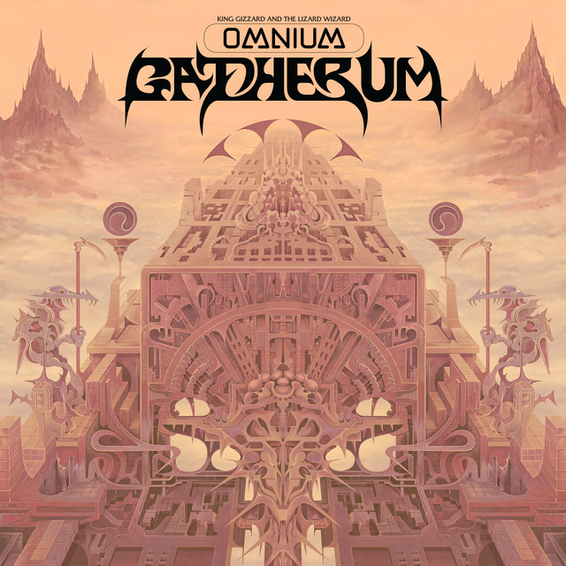 |
King Gizzard & the Lizard Wizard |
80 min |
2022/04/22 |
5 |
2022/12/17 |
|
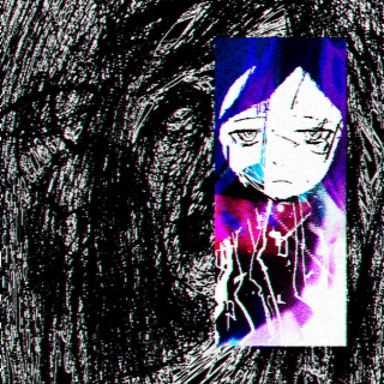 |
Sewerslvt |
89 min |
2021/11/12 |
7.5 |
2022/12/02 |
|
|
Jack Stauber |
44 min |
2018/04/14 |
8.5 |
2022/12/02 |
|
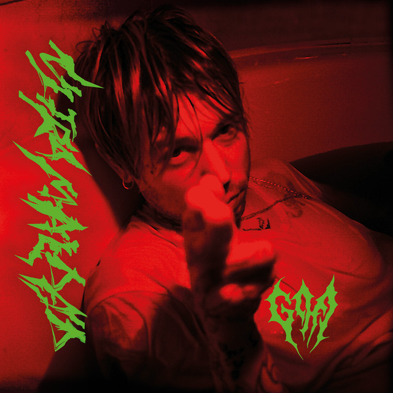 |
Goa |
30 min |
2021/11/11 |
7 |
2022/11/30 |
|
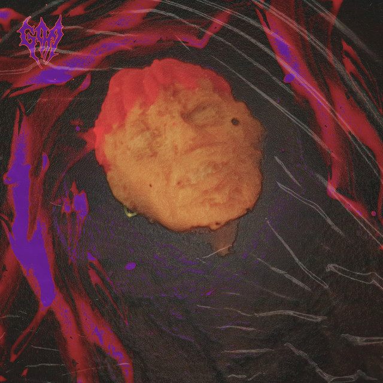 |
Goa |
22 min |
2020/04/17 |
5 |
2022/11/28 |
|
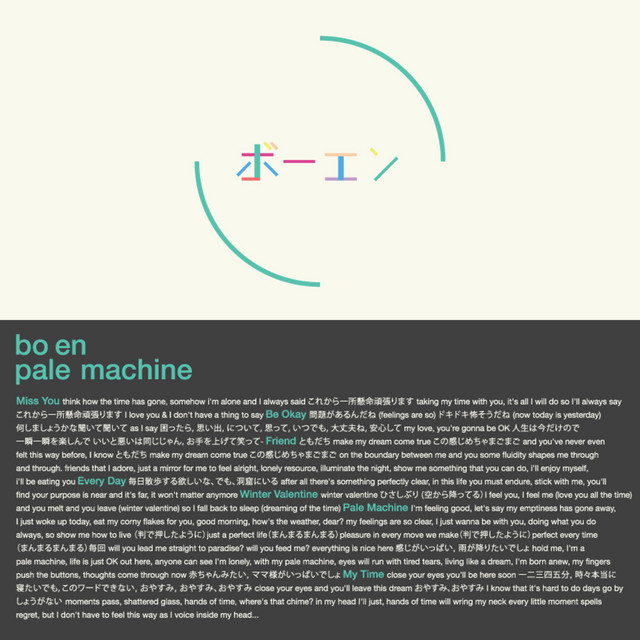 |
Bo En |
26 min |
2013/09/06 |
6 |
2022/11/25 |
|
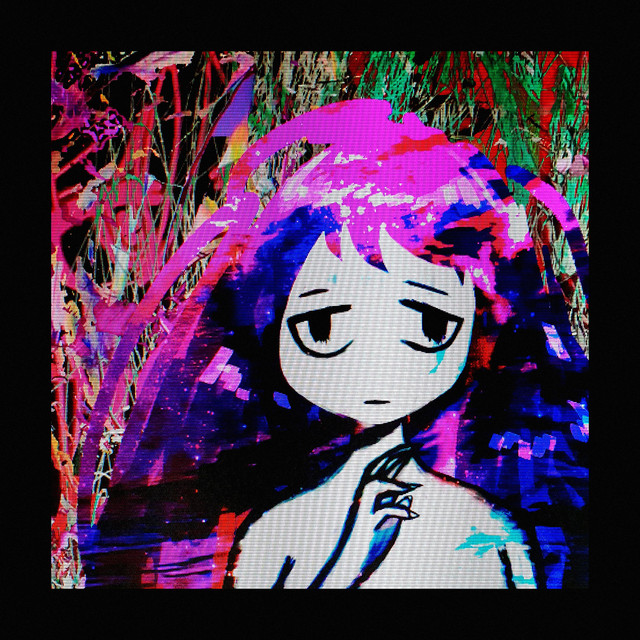 |
Sewerslvt |
52 min |
2020/01/25 |
5.5 |
2022/11/18 |
|
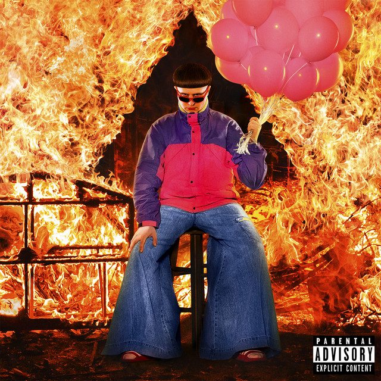 |
Oliver Tree |
37 min |
2020/07/17 |
4 |
2022/11/03 |
|
|
Kanye West |
68 min |
2010/03/22 |
4 |
2022/11/03 |
|
|
Sub Urban |
19 min |
2020/03/13 |
9.5 |
2022/11/03 |
|
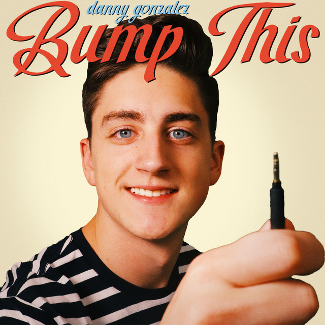 |
Danny Gonzalez |
15 min |
2019/04/26 |
7 |
2022/10/26 |
|
bbno$ |
33 min |
2022/10/21 |
3 |
2022/10/24 |
||
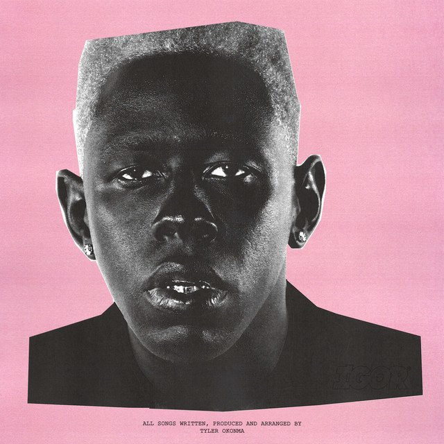 |
Tyler, The Creator |
40 min |
2019/05/17 |
8.5 |
2022/09/27 |
|
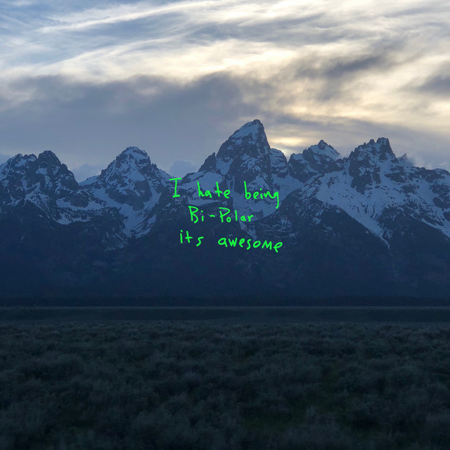 |
Kanye West |
24 min |
2018/06/01 |
3 |
2022/09/27 |
|
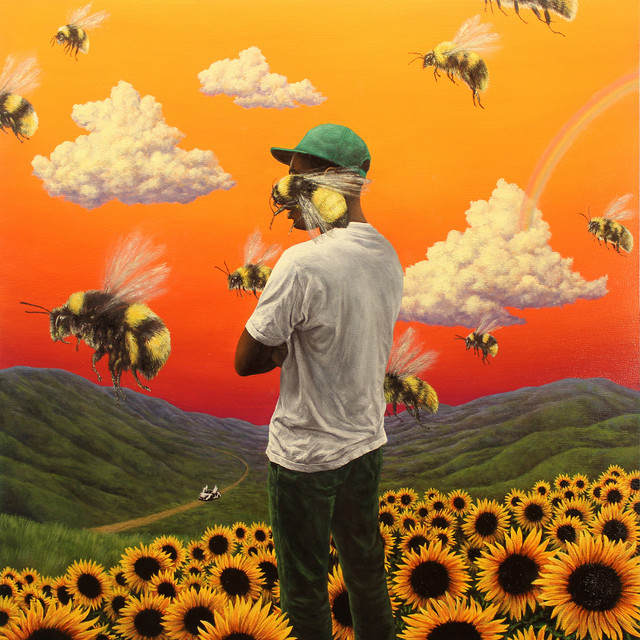 |
Tyler, The Creator |
46 min |
2017/08/11 |
8 |
2022/09/27 |
|
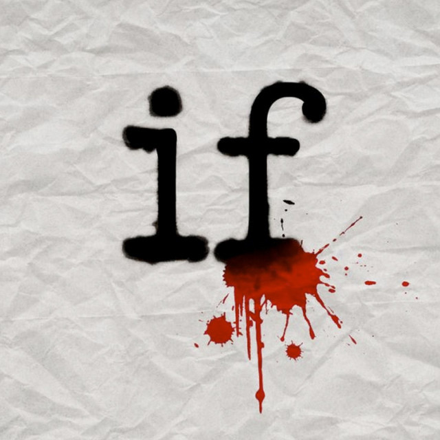 |
Mindless Self Indulgence |
45 min |
2008/04/29 |
9 |
2022/09/29 |
|
|
Twenty One Pilots |
38 min |
2021/05/21 |
2 |
2022/02/24 |
|
|
The Living Tombstone |
36 min |
2020/09/04 |
9 |
2022/02/24 |
|
bbno$ |
25 min |
2019/11/08 |
8.5 |
2022/02/23 |
||
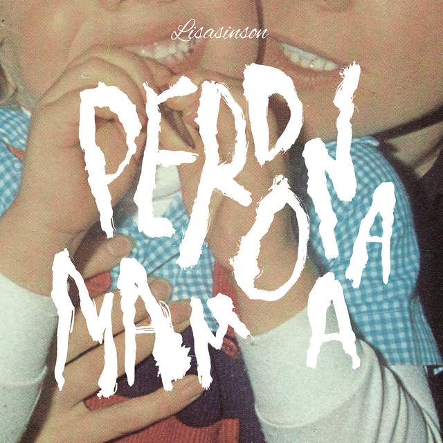 |
Lisasinson |
27 min |
2021/04/09 |
6 |
2022/02/22 |
|
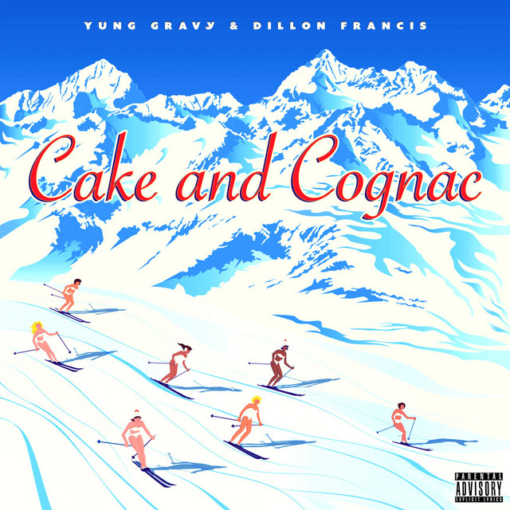 |
Yung Gravy, Dillon Francis |
10 min |
2022/02/04 |
3.5 |
2022/02/21 |
|
|
Tally Hall |
45 min |
2011/06/21 |
3 |
2022/02/21 |
|
|
Mother Mother |
47 min |
2008/09/23 |
4.5 |
2022/02/17 |
|
Axolotes Mexicanos |
19 min |
2015/02/16 |
8 |
2022/02/16 |
||
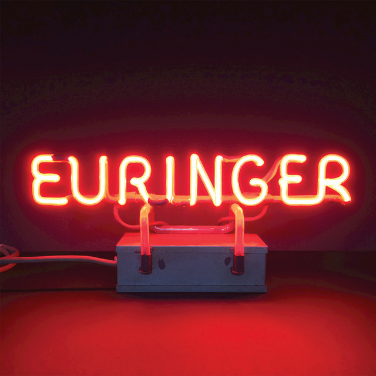 |
EURINGER |
56 min |
2018/10/19 |
2 |
2022/02/15 |
|
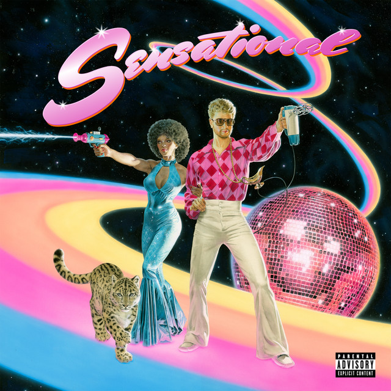 |
Yung Gravy |
32 min |
2019/05/31 |
10 |
2022/02/14 |
|
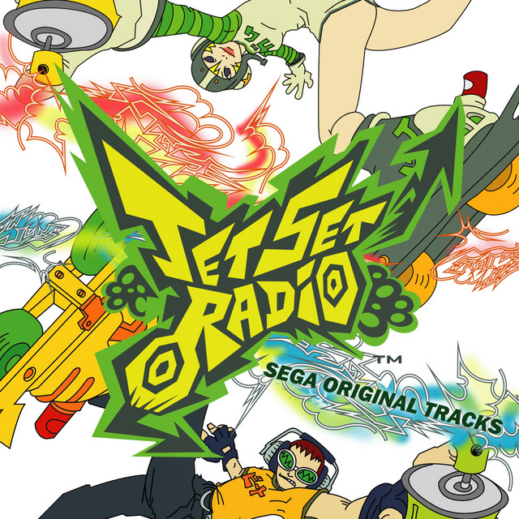 |
Hideki Naganuma, Richard Jacques, Toronto |
33 min |
2012/10/03 |
6 |
2022/02/11 |
|
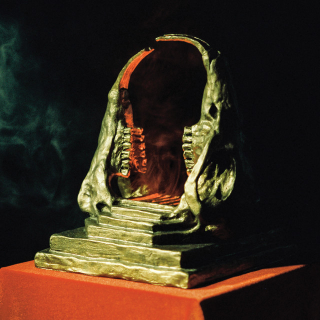 |
King Gizzard & the Lizard Wizard |
35 min |
2019/08/16 |
8 |
2022/02/10 |
|
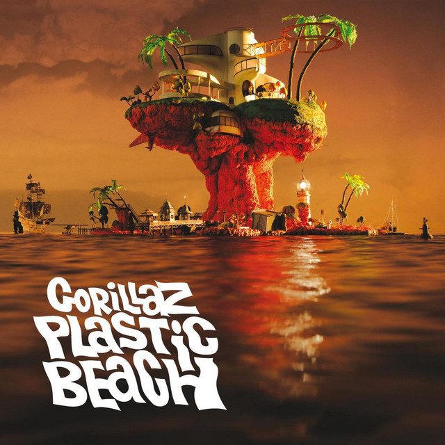 |
Gorillaz |
57 min |
2010/03/03 |
9.5 |
2022/02/09 |